Umi no Kura Market
Nestled in the heart of Kyoto’s centuries-old culinary tradition is a fish market that locals have trusted for generations.
While Kyoto is a landlocked city, its historical ties with the Sea of Japan and Osaka’s bay through efficient river and land trade have allowed it to become a hub for fresh seafood — carefully selected, transported overnight, and delivered with precision.

Est. 1624
400 Years of Excellence
150+ Vendors
Trusted Partners

300+ Varieties
Fresh Daily
Premium Quality
Certified Standards
Our Mission
To preserve Kyoto's culinary traditions while providing the finest, freshest seafood to our community. We bridge the gap between Japan's pristine waters and your table, ensuring every piece of fish meets our exacting standards.